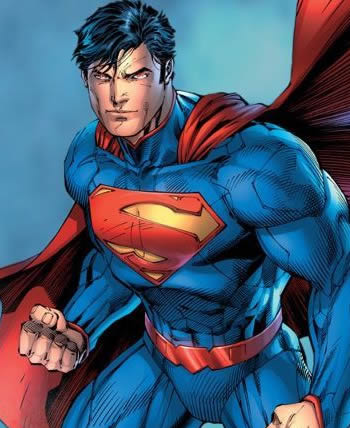

|
Kal-el or Superman is the one of the two survivors of the planet Krypton. His father discovered a natural disaster was going to occur and it would soon destroy the entire world. Jor-El had is new born son Kal-El and put him in a vessel for travel through hyperspace. The craft left just as Krypton exploded. Superman was raised since a baby on Earth when the craft landed there. Jonathan and Martha Kent found the baby inside the craft and took him into thier home, a small farm in Smallville in Kansas. Superman looked normal so the Kents thought that the baby was human. The baby had no super powers and so they named him Clark and raised him as their own son. As clark grew older Kryptoian abilites devloped. When Clark was older they showed him the craft in which he came to Earth in and told him how they found him. Clark decided to only use his powers for good. He thenleft Smallville to study at Metropolis University. Sometime before he leaves Jonathan Kent dies (in some versions only) Clark at first used his powers to secretly help people. Eventually he had to use his powers in public to stop the crash of a plane. After that with his parents he made the identity of Superman for public. The name given him by Lois Lane, a reporter who had been aboard the plane. Soon Clark got a job as a reporter by making a article about Superman. He now works for the Daily Planet. Superman now works with the Justice League to protect the Earth, and as Clark Kent works at the Daily Planet. |
Man of SteelLast Son of Krypton
|
|||||||||||||||||||||